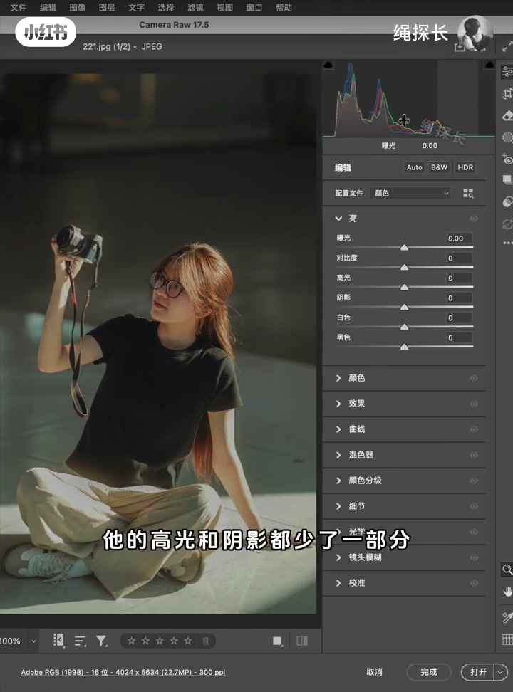
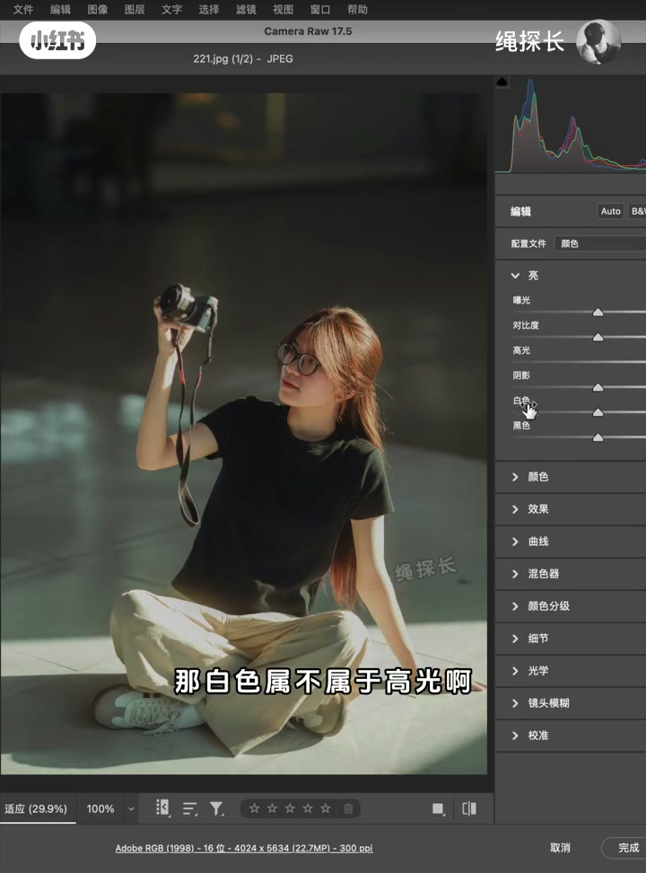
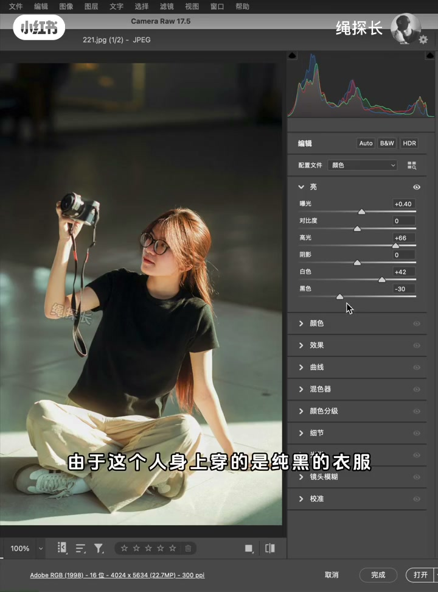
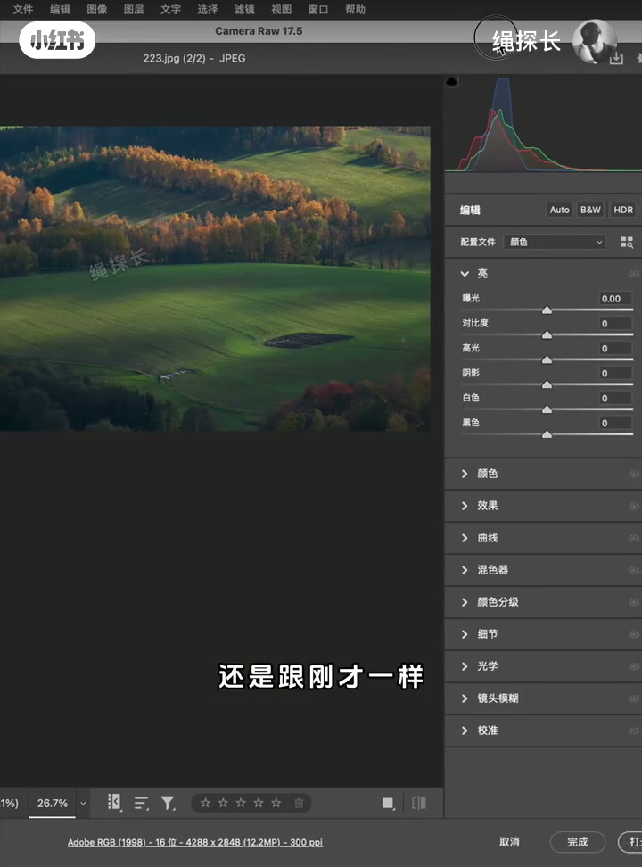
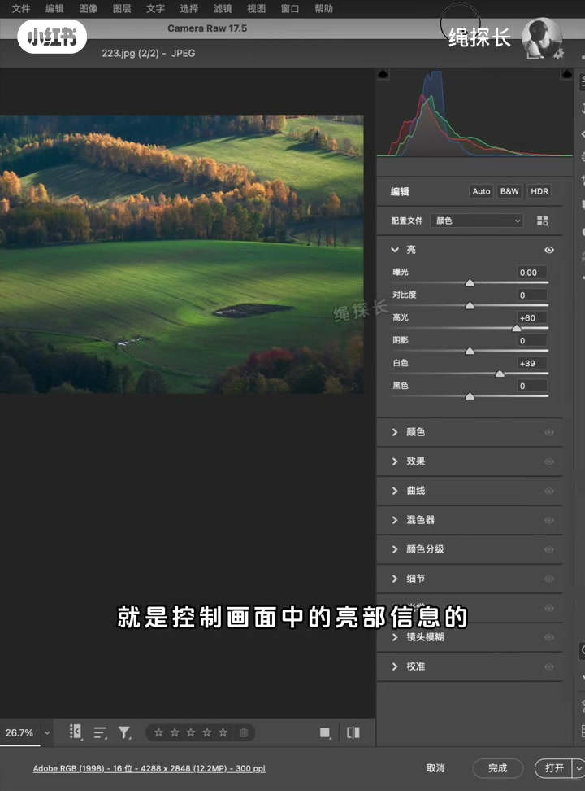
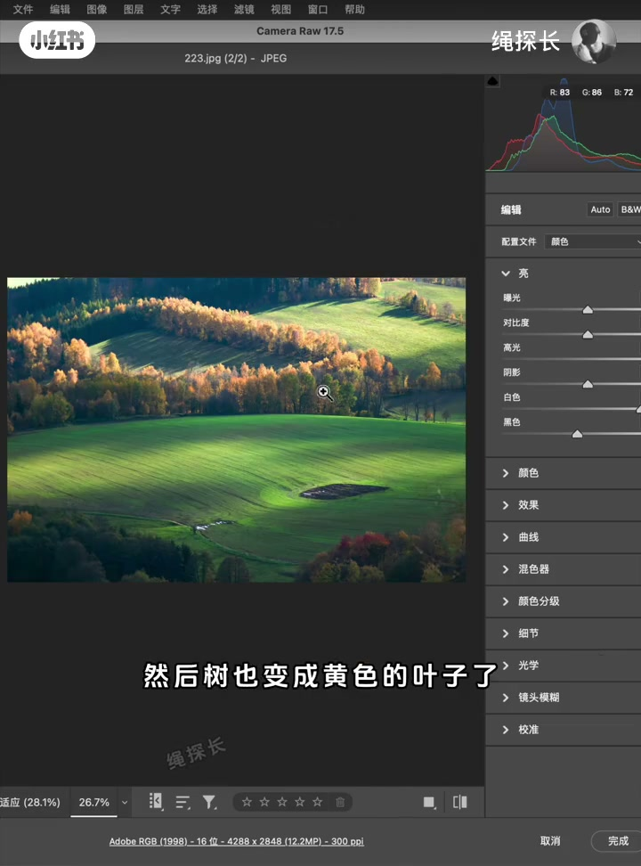

内容要点
这是一条摄影后期口播。作者先处理「学员觉得不通透、他自己觉得挺通透」的错位，再用同一套直方图看法演示两张 JPEG，最后补上颜色反差。全文口播完整，滑块数字只取画面读数。
知识结构
有人拍照好几年仍说不清通透。作者觉得部分来稿其实已经通透，是理解偏了。他要用一张风光和一张人像，分讲光影通透和颜色通透。
这张人像亮处不够亮、暗处不够暗。直方图上高光和阴影都少了一截。他强调：两端信息少，不代表题材处理错了；若只论通透，这种影调就是缺暗部、缺高光。
在 Camera Raw 的「亮」里把高光、白色加上，暗部也加上，再提一点整体曝光。白色被他说成比亮部高光更亮的那一档。黑衣服受地面反光会带灰，不能压成死黑。
同一看法用到第二张。白色和高光管画面亮部。提起来之后高光更亮，他觉得照片更通透；暗部再适当补一点黑色。
背景、衣服、裤子、头发、相机若都是黑的，光线再通透，颜色也不通透。风光若草、叶、晨光都偏黄，颜色混在一起同样不通透。收束句是：通不透，由光影和色彩反差一起决定。
通透在这条视频里不是清晰度，也不是把直方图拉满才算拍对。先看亮暗两端有没有信息，再看主体和背景的颜色是否分开；黑衣服这类受反光的暗部，不要为了贴墙压成死黑。
学员说不通透，作者先分成两件事
00:00–00:26开场没有自我介绍拍摄现场。绳探长直接说，很多摄影爱好者相机买了、拍了好几年，到现在还不知道什么是通透。少数学员经常发照片来说不够通透，他看了却觉得挺通透，于是判断对方理解错了这个词。这句话是他的个人看法，视频里没有把那些来稿放出来。
他宣布材料：一张风光、一张人像。通透要讲两个方面，第一光影要通透，第二颜色通透。为了让人听懂，先讲光影。画面从大约第 8 秒起就是 Camera Raw 17.5，人像已经打开，右侧「亮」还是默认。
人像的亮和暗都不够极端
00:26–01:03他给光影通透的定义很窄：就是照片的亮暗对比。对着这张人像，他说对比不强，亮的地方不是特别亮，暗的地方又不是特别暗，整张照片亮和暗之间拉得不够开。
从直方图上也能看到，高光和阴影都少了一部分。
Whisper 把直方图听成「指方图」，画面右上角就是直方图，下文按画面改正。他接着把判断拆开：高光和阴影信息都少，不代表这张照片拍坏了，有些题材就需要这样处理。若只从通透来讲，这个影调绝对不通透，缺暗部、缺高光。题材需要和通透标准，在这里被他说成两件事。

补上高光和白色，黑衣服不压死
01:03–02:08遇到这种两端都缺的情况，他指向可以调影调的板块。口播和字幕都说「开幕」，窗口标题写的是 Camera Raw 17.5，正文按画面称呼软件，并保留他的原词。他说的「亮和曲线」，画面上展开的是「亮」，「曲线」只在下面的列表里，这一段没有点开。操作都发生在曝光、高光、阴影、白色、黑色这些滑块上。
顺序是先加高光。他问白色属不属于高光，自己答：白色也属于高光，只是比亮部的高光更亮一些，所以两个都加上。暗部也缺，就把暗部加上，再把整体曝光提一提。提完他让观众看：是不是比刚才的影调通透得多。直方图上，高光区有了一定信息，暗部也有一点信息。

暗部如果还想更多，可以压得更暗，让直方图贴墙。但是这人穿的是纯黑衣服，他要求留一点细节，不能压成纯黑。理由是黑色衣服会吃到地面环境的反光，带着一些灰，压成死黑不合适。到这里他收一句：这就是光线通透。前半他一直说光影，这一句改成了光线，指的仍是亮暗两端被拉开之后的影调。

01:50 这一帧面板上能读到的数是：曝光 +0.40，高光 +66，白色 +42，黑色 -30，对比度和阴影仍是 0。这些是画面读数，口播没有报出具体数字。
风光也是先看两端，再提亮部
02:08–02:46人像讲完，他切到自然风光，说还是跟刚才一样。看直方图就能看出：高光缺很多信息，暗部只缺一点。对应做法是在「亮」里加高光、加白色。这两个滑块被他定义成控制画面亮部信息的旋钮：高光提起来、白色提起来，直方图右边就会有信息，高光更亮，照片看上去更通透。
口播里有一句「三封信息」。相邻字都在说直方图右边出现信息，但「三封」对不上画面上的标注，这里不改写成三个峰，只保留「右边有了亮部信息」这个能对上的意思。


02:25 这一帧，高光是 +60，白色是 +39，曝光、对比度、阴影、黑色都还是 0。他随后说暗部缺一点，可以适当补一点黑色，并问调整后的影调是不是更通透。补黑色之后的具体滑块值，这一帧还没动，后面预览也没有稳定读数，所以不写死一个黑色数字。
颜色分开才通透，全黑或全黄都不行
02:46–03:46影调讲完，他才解释颜色通透：就是背景和主体之间的色彩对比和反差。即使这张人像的光线已经调得很通透，假如背景是纯黑的布，人又穿纯黑衣服、黑色裤子，黑色头发，拿着黑色相机，光线再通透，颜色也不够通透，因为颜色没有反差。有反差感的颜色才会显得通透。这是假设，不是把演示人像换成全黑：画面里的裤子一直是浅色。
风光被他拿来做第二个假设。草地若变成黄草，树也变成黄叶，再加上早上的暖光，那么即便光影在、直方图看上去很通透，颜色混在一起，仍然不会显得通透。03:15 的画面里，坡地还是绿的，树丛已经带黄橙色叶子；字幕说「树也变成黄色的叶子了」，说的是这个假设往下推，不是这一帧已经把草地调黄。

一张照片是否通透，是光影决定的，以及色彩反差决定的。
片尾希望观众对通透有一定理解，并说这个账号会长期分享零技术小白都看得懂、学了会的真实摄影后期教程。视频没有比较其他软件，也没有给通透一个可测量的阈值。